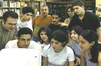
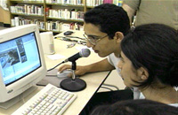
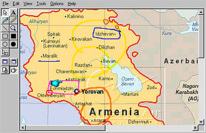
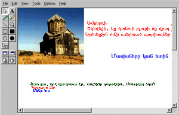

|
THE THIRD VIDEOCONFERENCE:
Completing the cycle
Now it was the turn of the 3PN Schools in Canada and Lebanon to connect live
through the Net. It was nine in the morning in Montreal and four
in the afternoon in Beirut when the students of the Sourp Hagop
Armenian School came online to greet the 3PN
coordinator in Los Angeles. Assisted by Hourig Attarian and with
the technical help of Antranik Kababejian and Mher Karakashian,
the Montreal students were ready to play the planned knowledge
game on Armenian monuments and landmarks.
Montreal
students greet their peers in Beirut

 |
Within minutes they were joined by the M. & H. Arslanian
Djemaran and Yeghishe Manookian students in Beirut, assisted by
Jirayr Beujekian, the 3PN coordinator there.
Soon photographs from Armenia were being displayed on the shared "whiteboard",
locations were being circled on the dynamic map of Armenia, and
questions and answers were being exchanged either orally through
the voice and video link, or written in Armenian in the "chat"
area. The videoconference ended (again, going past the planned
schedule) with a free-for-all whiteboard drawing session, and
general conversation.
Students
pinpoint Amberd and other landmarks on the whiteboard

 |
> Videoconferencing
in 3PN 1999
< Back
to the Resource Center |